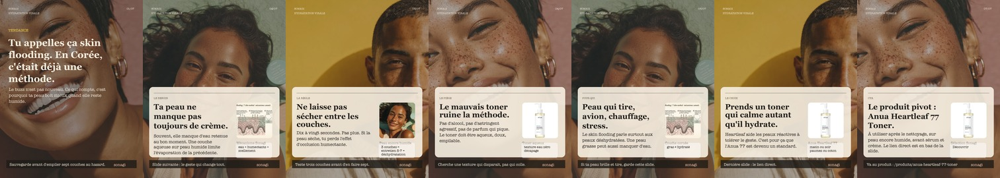
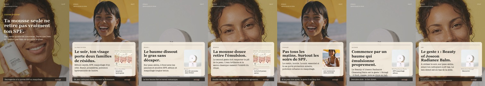
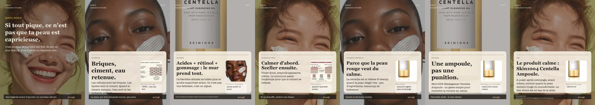
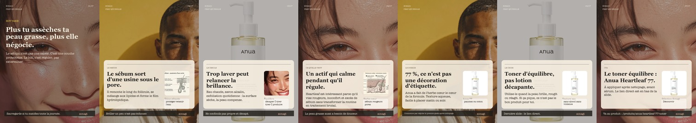
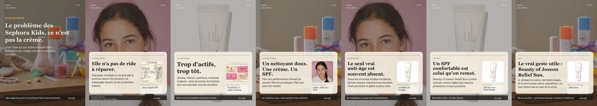

Skin flooding : TikTok l'a découvert, Séoul l'avait déjà codéTrend hook, mécanisme d'hydratation, puis CTA direct vers Anua Heartleaf 77.
Le double nettoyage n'est pas une routine de plusSPF/maquillage/pollution -> deux solvants -> Beauty of Joseon Radiance Balm.
Ta barrière n'a pas besoin de courage, elle a besoin de silencePeau qui pique -> mur de briques -> deux semaines de simplification -> Skin1004 Centella.
La peau qui brille n'est pas salePeau brillante -> sébum protecteur -> réguler sans décaper -> Anua Heartleaf.
Une fille de douze ans n'a pas besoin d'anti-âgeTrend Sephora Kids -> peau jeune -> moins de produits -> SPF comme vrai geste utile.